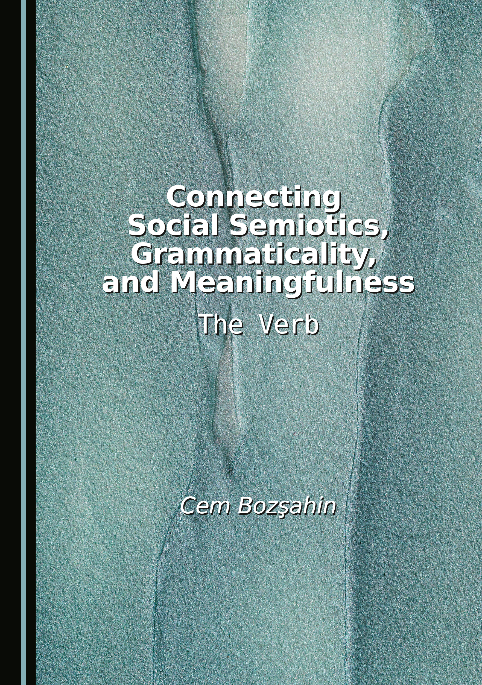
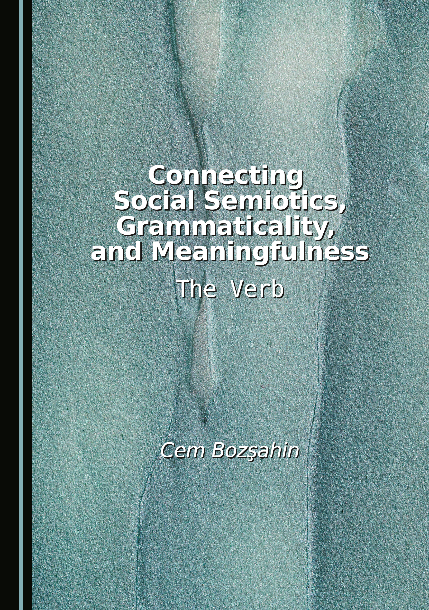

Books
 Bozsahin, Cem (2025). Connecting Social Semiotics, Grammaticality, and Meaningfulness: The Verb. Newcastle Upon Tyne: Cambridge Scholars, UK.
 Bozsahin, Cem (2012). Combinatory Linguistics. Berlin: Mouton de Gruyter, Germany.
Bozsahin, Cem (2012). Combinatory Linguistics. Berlin: Mouton de Gruyter, Germany.
Updates and new uploads of research output are in Academia.edu.
Old manuscripts are at my METU research page.
 Bozsahin, Cem (2025). Connecting Social Semiotics, Grammaticality, and Meaningfulness: The Verb. Newcastle Upon Tyne: Cambridge Scholars, UK.
Books
Bozsahin, Cem (2012). Combinatory Linguistics. Berlin: Mouton de Gruyter, Germany.